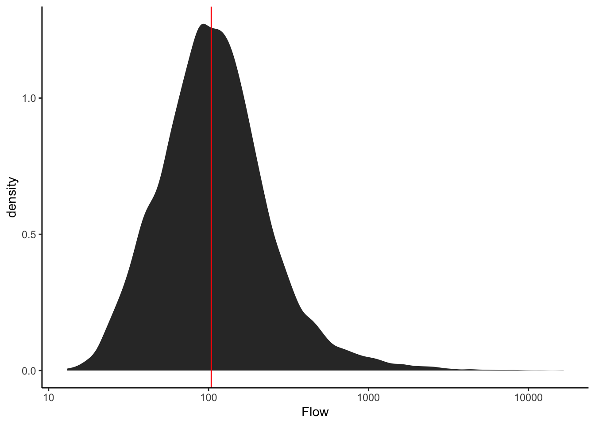
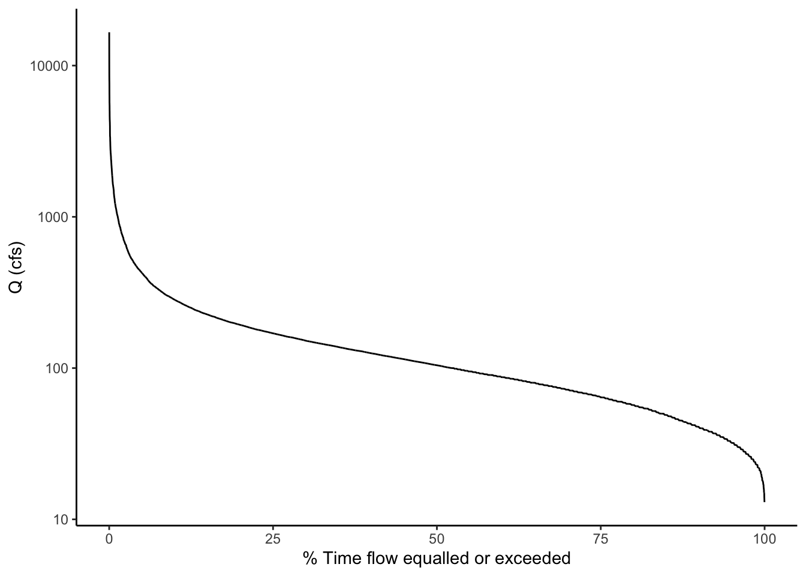

Chapter 10 Flow Duration Curves
Get this document and a version with empty code chunks at the template repository on github: https://github.com/VT-Hydroinformatics/9-Flow-Duration-Curves
Alright team. So far we have learned to wrangle data, make plots, and look at data distributions. Now it is time to put all that knowledge to use.
We are on our way to doing analyses of extreme discharge events: low flow statistics and floods. But in order to do that, we need to understand a common way to look at data distributions in hydrology: the flow duration curve. As you’ll see below, this is basically just a different way of looking at a pdf, and it can take some getting used to. But it is also a very useful tool!
As always let’s load the packages we will use: tidyverse, dataRetrieval, lubridate, and patchwork. Patchwork will help us make a multi-panel graph in the last part of the exercise.
We will also use theme_set() in this chunk so we don’t have to change the ggplot theme every time we make a plot.
library(tidyverse)
library(dataRetrieval)
library(lubridate)
library(patchwork)
#set plot theme for the document so we
#don't have to do it in every plot
theme_set(theme_classic())10.1 Get data
To start, let’s grab the USGS discharge data for the gage in Linville NC from 1960 to 2020.
We will download the data using USGS dataRetrieval and look at a line plot.
siteno <- "02138500" #Linville NC
startDate <- "1960-01-01"
endDate <- "2020-01-01"
parameter <- "00060"
Qdat <- readNWISdv(siteno, parameter, startDate, endDate) %>%
renameNWISColumns()
#Look at the data
Qdat %>% ggplot(aes(x = Date, y = Flow))+
geom_line()
10.2 Review: describe the distribution
Make a plot to view the distribution of the discharge data.
- What is the median flow value?
- What does this tell us about flow at that river?
- How often is the river at or below that value?
- Could you pick that number off the plot?
- What about the flow the river is at or above only 5% of the time?
Qdat %>% ggplot(aes(Flow))+
stat_density()+
scale_x_log10()+
geom_vline(xintercept = median(Qdat$Flow), color = "red")
10.3 ECDFs
Let’s look at an Empirical Cumulative Density Function (ECDF) of the data.
Look at this carefully, what does it show? How is it different from the pdf of the data?
Plot the median again. Without the line on the plot, how would you tell where the median is?
Given your answer to the question above, can you determine the flow the river is at or above only 25% of the time? Think carefully about what the y axis of the ECDF means.
Qdat %>% ggplot(aes(Flow))+
stat_ecdf()+
scale_x_log10()+
geom_vline(xintercept = median(Qdat$Flow), color = "red")+
geom_vline(xintercept = quantile(Qdat$Flow)[4], color = "blue")10.4 Calculate flow exceedence probabilities
In hydrology, it is common to look at a similar representation of flow distributions, but with flow on the Y axis and “% time flow is equaled or exceeded” on the X axis. There are a number of ways we could make this plot: for example we could transform the axes of the plot above or we could use the function that results from the ECDF function in R to calculate exceedence probabilities at flow throughout our range of flows. But for our purposes, we are just going to calculate it manually.
We are going to calculate our own exceedence probabilities because knowing how to do this will hopefully help us understand what a flow duration curve is AND we will need to do similar things in our high and low flow analyses.
The formula for exceedence probability (P) is below. What do we need to calculate this?
Exceedence probability (P), Probability a flow is equaled or exceeded
\(P = 100 * [M / (n + 1)]\)
M = Ranked position of the flow n = total number of observations in data record
Here’s a description of what we will do:
Pass our Qdat data to mutate and create a new column that is equal to the ranks of the discharge column.
Then pass that result to mutate again and create another column equal exceedence probability (P) * 100, which will give us %.
#Flow is negative in rank() to make
#high flows ranked low (#1)
Qdat <- Qdat %>%
mutate(rank = rank(-Flow)) %>%
mutate(P = 100 * (rank / (length(Flow) + 1)))10.5 Plot a Flow Duration Curve using the probabilities
Now construct the following plot: A line with P on the x axis and flow on the y axis. Name the x axis “% Time flow equaled or exceeded” and log the y axis.
That’s a flow duration curve!
Questions about the flow duration curve:
- How often is a flow of 100 cfs exceeded at this gage?
- Is flow more variable for flows exceeded 0-25% or of the time or 75-100% * of the time?
- How can you tell?
- These data are daily observations. Given that, what is a more accurate name for the x axis?
- What would the X axis be called if we were using maximum yearly data?
Qdat %>% ggplot(aes(x = P, y = Flow))+
geom_line()+
scale_y_log10()+
xlab("% Time flow equalled or exceeded")+
ylab("Q (cfs)")
10.6 Make an almost FDC with stat_ecdf
Below is an example of making a very similar plot with the stat_ecdf() geometry in ggplot. Notice how similar the result is to the one we calculated manually.
To make the plot similar, we will reverse the y axis of the ecdf plot with scale_y_reverse and flip the axes (change the x to y and the y to x) with coord_flip()
Qdat %>% ggplot(aes(Flow))+
stat_ecdf()+
scale_x_log10()+
scale_y_reverse()+
coord_flip()+
xlab("Q (cfs)")+
ylab("Probability flow is not exceeded")10.7 Example use of an FDC
Let’s explore one potential use of flow duration curves: examining the differences between two sets of flow data.
From the line plot of the discharge, it looked like the flow regime may have shifted a bit in the data between the early years and newer data. Let’s use flow duration curves to examine potential differences. We can come up with groups and then use group_by to run the analysis by groups instead of the whole dataset.
We are introducing a new function here called case_when(). This allows you to assign values to a new column based on values in another column. In our case, we are going to name different time periods in our data.
We will then group the data by these periods and calculate exceedence probabilities for each. The procedure works the same, except we add a group_by statement to group by our time period column before we create the rank and P columns. Then, when we plot, we can just tell ggplot to create different colored lines based on the time period names and it will plot a separate flow duration curve for each. Tidyverse FOR THE WIN!
Describe the differences in flow regime you see between the three periods of 1960-1980, 1980-2000, and 2000-2020.
Qdat <- Qdat %>%
mutate(year = year(Date)) %>%
mutate(period = case_when( year <= 1980 ~ "1960-1980",
year > 1980 & year <= 2000 ~ "1980-2000",
year > 2000 ~ "2000-2020"))
Qdat <- Qdat %>%
group_by(period) %>%
mutate(rank = rank(-Flow)) %>%
mutate(P = 100 * (rank / (length(Flow) + 1)))
Qdat %>% ggplot(aes(x = P, y = Flow, color = period))+
geom_line()+
scale_y_log10()+
xlab("% Time flow equalled or exceeded")+
ylab("Q (cfs)")10.8 Compare to a boxplot of the same data
We are really just looking at the data distribution here. Remember another good way to compare distributions is a boxplot. Let’s create a boxplot showing flows from these time periods. (we will also mess with the dimensions of the plot so the boxes aren’t so wide using fig.width and fig.height in the ``` header above the code chunk)
What are the advantages/disadvantages of the flow duration curves vs. boxplots?
Qdat %>% ggplot(aes(x = period, y = Flow)) +
geom_boxplot()+
scale_y_log10()
10.9 Challenge: Examining flow regime change at the Grand Canyon
The USGS Gage “Colorado River at Yuma, AZ” is below the Hoover dam. The Hoover Dam closed in 1936, changing the flow of the Colorado River below. Load average daily discharge data from 10-01-1905 to 10-01-1965 from the Yuma gage. Use a line plot of discharge and flow duration curves to examine the differences in discharge for the periods: 1905 - 1936, 1937 - 1965.
How does the FDC show the differences you observed in the line plot?
siteid <- "09521000"
startDate <- "1905-10-01"
endDate <- "1965-10-01"
parameter <- "00060"
WS <- readNWISdv(siteid, parameter, startDate, endDate) %>%
renameNWISColumns() %>%
mutate(year = year(Date)) %>%
mutate(period = case_when( year <= 1936 ~ "Pre Dam",
year > 1936 ~ "Post Dam")) %>%
group_by(period) %>%
mutate(rank = rank(-Flow)) %>%
mutate(P = 100 * (rank / (length(Flow) + 1)))
flow <- ggplot(WS, aes(Date, Flow))+#, color = period))+
geom_line()+
ylab("Q (cfs)")
fdc <- WS %>% ggplot(aes(x = P, y = Flow, color = period))+
geom_line()+
#scale_y_log10()+
xlab("% Time flow equalled or exceeded")+
ylab("Q (cfs)")
flow / (fdc + plot_spacer())That’s it! Next we will apply some of these principles to look at low-flow statistics.